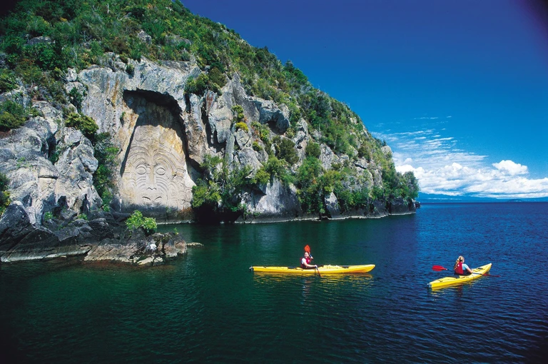

New Zealand
Visiting New Zealand is like stepping into a paradise of natural beauty, with its stunning landscapes that range from majestic snow-capped mountains to pristine beaches. The country's diverse geography offers travelers the chance to explore lush rainforests, witness powerful geothermal wonders, and partake in thrilling outdoor adventures like hiking and bungee jumping. New Zealand is renowned for its welcoming Kiwi culture, where you can engage with friendly locals, savor delicious cuisine, and learn about the rich Maori heritage. Whether you're an adrenaline junkie seeking thrill or a nature lover looking for serenity, New Zealand has something for everyone, including remarkable fjords, wildlife sanctuaries, and vibrant cities. A visit to New Zealand promises unforgettable experiences, from exploring the movie-famous landscapes of Middle-earth to experiencing the warmth and wonder of this unique and captivating corner of the world.